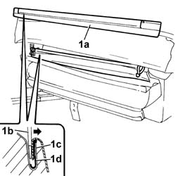
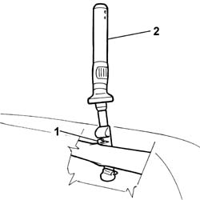
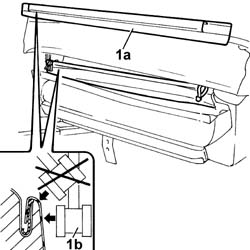

7045B08 front head restraint pins - r r
- Path
- Procedures > 70 FITTINGS > 7045 FRONT SEATS > 7045B front seat head restraint/arm rest > 7045B08 front head restraint pins - r r
- Kind
- repair procedure (removal / refitting; the operation number is the code)
- Applies to
- all engines; all production periods
- Interactive page
- https://sloeber94.github.io/elrnDB-fDbl/en/#/2585179
Applies to: all engines; all production periods
 Removing
Removing
 Refitting
RefittingOp. 7045B10 FRONT SEAT HEAD RESTRAINT, LEFT OR RIGHT - R.R.
Op. 7045A10 FRONT SEAT (ONE), LEFT OR RIGHT - R.R.
1. Prise up the lower edge of front seat trim (1a) using a normal screwdriver with blade of suitable size (1b) to open the groove (1c) and release the trim profile (1d).

Applies to: all engines; all production periods
1. Working inside the trim, remove the retaining clip.
2. Remove the front seat head restraint pin from its seat.
Carry out the same operation for the remaining pin.

Applies to: all engines; all production periods
Refitting
RemovingFit the head restraint pins in their seat and secure them using the retaining clips.
1. Fit the lower edge of trim (1a) in its seat and tap into the channel using a rubber mallet (1b).

Applies to: all engines; all production periods